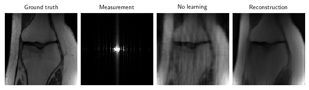
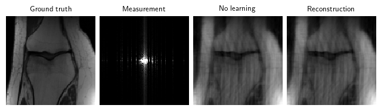

import deepinv as dinv
import torch
from torchvision.transforms import Resize
device = dinv.utils.get_freer_gpu() if torch.cuda.is_available() else "cpu"
rng = torch.Generator(device=device).manual_seed(0)
results = {}Comparison of self-supervised learning algorithms for imaging without ground truth
Andrew Wang & Julián Tachella | ICMS Self-Supervised Machine Learning workshop | 24-25th Feb 2025
Here we demonstrate various self-supervised learning algorithms for solving imaging inverse problems, and compare them on a standard set up of accelerated MRI reconstruction using the FastMRI dataset.
Contents
- Define experiment training using DeepInverse
- Equivariant Imaging methods
- Equivariant Imaging (EI)
- Diffeomorphic-Equivariant Imaging (Diffeo-EI)
- Equivariant Imaging (EI)
- Multi-operator methods
- Multi-operator Imaging (MOI)
- Multi-operator Equivariant Imaging (MO-EI)
- Multi-operator Imaging (MOI)
- Measurement splitting methods
- Self-supervised data undersampling (SSDU) including Artifact2Artifact
- Noise2Inverse
- Noisier2Noise-SSDU
- Self-supervised data undersampling (SSDU) including Artifact2Artifact
- Baselines: supervised learning and measurement consistency
- Summary
- Citation
Notes:
- We assume, in the general case, that measurements are generated from multiple random operators that span the whole space as this is required for many of the algorithms (but not all, including EI).
- We demonstrate feedforward methods rather than generative models. We also provide self-supervised generative models including GANs. See Example: “Imaging inverse problems with adversarial networks”.
- We assume noiseless data, however some methods can be easily generalised to noisy scenarios using the SURE family of losses. See Example: “Self-supervised denoising with the UNSURE loss.” and [2].
0. Define experiment training using DeepInverse
First, define all common code for training (MRI physics, masking, model, data and metrics).
We provide many easy-to-use classes for MRI-related experiments. See Example - “Tour of MRI functionality in DeepInverse” for more.
Note we train with a custom FastMRI subset of 973 images created using deepinv.datasets.FastMRISliceDataset.save_simple_dataset. Because of FastMRI data use agreement, we do not provide this dataset. To run a quick demo, set file_name=None below to download our tiny demo subset. See deepinv.datasets.SimpleFastMRISliceDataset for more details.
file_name = "fastmri_knee_singlecoil.pt"# Define MRI physics with random masks
physics_generator = dinv.physics.generator.GaussianMaskGenerator(
img_size=(128, 128), acceleration=4, rng=rng, device=device
)
physics = dinv.physics.MRI(img_size=(128, 128), device=device)# Define unrolled network with a small UNet backbone
denoiser = dinv.models.UNet(2, 2, scales=3)
model = lambda: dinv.utils.demo.demo_mri_model(denoiser=denoiser, num_iter=3, device=device).to(device)Generate dataset…
# Define FastMRI datasets
train_dataset = dinv.datasets.SimpleFastMRISliceDataset(
"data", file_name=file_name, transform=Resize(128),
train=True, train_percent=0.8, download=True
)
test_dataset = dinv.datasets.SimpleFastMRISliceDataset(
"data", file_name=file_name, transform=Resize(128),
train=False, train_percent=0.8,
)
# Simulate and save random measurements
dataset_path = dinv.datasets.generate_dataset(
train_dataset=train_dataset,
test_dataset=test_dataset,
physics=physics,
physics_generator=physics_generator,
save_physics_generator_params=True,
overwrite_existing=False,
device=device,
save_dir="data",
batch_size=1,
)
# Load saved datasets
train_dataset = dinv.datasets.HDF5Dataset(dataset_path, split="train", load_physics_generator_params=True)
test_dataset = dinv.datasets.HDF5Dataset(dataset_path, split="test", load_physics_generator_params=True)
test_dataset = torch.utils.data.Subset(test_dataset, range(min(len(test_dataset), 50)))
train_dataloader, test_dataloader = torch.utils.data.DataLoader(train_dataset, shuffle=True), torch.utils.data.DataLoader(test_dataset)c:\Users\s2558406\Documents\Repos\deepinv-selfsup-fastmri\venv\lib\site-packages\deepinv\datasets\fastmri.py:105: FutureWarning: You are using `torch.load` with `weights_only=False` (the current default value), which uses the default pickle module implicitly. It is possible to construct malicious pickle data which will execute arbitrary code during unpickling (See https://github.com/pytorch/pytorch/blob/main/SECURITY.md#untrusted-models for more details). In a future release, the default value for `weights_only` will be flipped to `True`. This limits the functions that could be executed during unpickling. Arbitrary objects will no longer be allowed to be loaded via this mode unless they are explicitly allowlisted by the user via `torch.serialization.add_safe_globals`. We recommend you start setting `weights_only=True` for any use case where you don't have full control of the loaded file. Please open an issue on GitHub for any issues related to this experimental feature.
x = torch.load(root_dir / file_name)
c:\Users\s2558406\Documents\Repos\deepinv-selfsup-fastmri\venv\lib\site-packages\deepinv\datasets\datagenerator.py:244: UserWarning: Dataset data/dinv_dataset0.h5 already exists, skipping...
warn(f"Dataset {hf_path} already exists, skipping...")# Plot sample image
x, y, params = next(iter(test_dataloader))
dinv.utils.plot({"x": x, "y": y, "Mask": params["mask"], "Zero-filled": physics.A_adjoint(y, **params)})
def train(loss: dinv.loss.Loss, epochs: int = 0):
_model = model()
trainer = dinv.Trainer(
model = _model,
physics = physics,
optimizer = torch.optim.Adam(_model.parameters(), lr=1e-3),
train_dataloader = train_dataloader,
eval_dataloader = test_dataloader,
epochs = epochs,
losses = loss,
scheduler = None,
metrics = dinv.metric.PSNR(complex_abs=True),
ckp_interval = 10,
device = device,
eval_interval = 1,
save_path = "models",
plot_images = False,
wandb_vis = False,
)
trainer.train()
trainer.plot_images = True
return trainer1. Equivariant imaging methods
1a. Equivariant imaging (EI)
The EI self-supervised loss [1] assumes that the set of signals is invariant to a group of transformations in order to learn from incomplete measurement data alone:
\(\mathcal{L}_\text{EI}=\lVert T_g \hat{x} - f(A(T_g \hat{x}), A)\rVert_2^2\)
where \(\hat{x}=f(y, A)\) is a reconstructed signal and \(T_g\) is a transformation sampled at random from a group \(g\sim G\). EI was applied to MRI in [2]. Note that this works even when \(A\) is fixed across the dataset as it constructs multiple virtual operators.
See also: Example - “Self-supervised learning with Equivariant Imaging for MRI”; Example - “Image transformations for Equivariant Imaging”; Docs - deepinv.loss.EILoss.
[1] Chen D., Tachella J. & Davies M., “Equivariant Imaging: Learning Beyond the Range Space”
[2] Chen D., Tachella J. & Davies M., “Robust Equivariant Imaging: a fully unsupervised framework for learning to image from noisy and partial measurements”
loss = [
dinv.loss.MCLoss(),
dinv.loss.EILoss(transform=dinv.transform.Rotate())
]# Set epochs > 0 to train the model
trainer = train(loss, epochs=0)The model has 2070091 trainable parameters# Load pretrained model for 50 epochs, test on test dataset, and save sample reconstruction
trainer.ckpt_pretrained = "models/pretrained/ei.pth.tar"
trainer.load_model()
results["ei"] = trainer.test(test_dataloader)
physics.update_parameters(**params)
results["ei"]["sample"] = trainer.model(y, physics)c:\Users\s2558406\Documents\Repos\deepinv-selfsup-fastmri\venv\lib\site-packages\deepinv\training\trainer.py:273: FutureWarning: You are using `torch.load` with `weights_only=False` (the current default value), which uses the default pickle module implicitly. It is possible to construct malicious pickle data which will execute arbitrary code during unpickling (See https://github.com/pytorch/pytorch/blob/main/SECURITY.md#untrusted-models for more details). In a future release, the default value for `weights_only` will be flipped to `True`. This limits the functions that could be executed during unpickling. Arbitrary objects will no longer be allowed to be loaded via this mode unless they are explicitly allowlisted by the user via `torch.serialization.add_safe_globals`. We recommend you start setting `weights_only=True` for any use case where you don't have full control of the loaded file. Please open an issue on GitHub for any issues related to this experimental feature.
checkpoint = torch.load(self.ckpt_pretrained, map_location=self.device)
Test: 98%|███████████████████████████████████████████████████████████████████████▌ | 49/50 [00:09<00:00, 5.20it/s, PSNR=30.6, PSNR no learning=26.9]Test: 100%|█████████████████████████████████████████████████████████████████████████| 50/50 [00:09<00:00, 5.45it/s, PSNR=30.6, PSNR no learning=26.9]
Test results:
PSNR no learning: 26.897 +- 2.730
PSNR: 30.643 +- 2.9921b. Diffeomorphic-equivariant imaging
EI was extended beyond the Euclidean transformation group to the non-linear diffeomorphic group in [3] for MRI problems:
\(\mathcal{L}_\text{Diffeo-EI}=\mathcal{L}_\text{EI}\text{ where }G=\text{Diff}(\mathbb{R}^n)\)
See also: Example - “Image transforms for equivariance & augmentations”.
[3] Wang. A & Davies M., “Fully unsupervised dynamic MRI reconstruction via geometrotemporal equivariance”; demo page
<Figure size 640x480 with 0 Axes><Figure size 640x480 with 0 Axes><Figure size 640x480 with 0 Axes># Set epochs > 0 to train the model
trainer = train(loss, epochs=0)The model has 2070091 trainable parameters# Load pretrained model for 50 epochs, test on test dataset, and save sample reconstruction
trainer.ckpt_pretrained = "models/pretrained/diffeo-ei.pth.tar"
trainer.load_model()
results["diffeo-ei"] = trainer.test(test_dataloader)
physics.update_parameters(**params)
results["diffeo-ei"]["sample"] = trainer.model(y, physics)Test: 98%|███████████████████████████████████████████████████████████████████████▌ | 49/50 [00:11<00:00, 3.87it/s, PSNR=31.4, PSNR no learning=26.9]Test: 100%|█████████████████████████████████████████████████████████████████████████| 50/50 [00:11<00:00, 4.22it/s, PSNR=31.4, PSNR no learning=26.9]
Test results:
PSNR no learning: 26.897 +- 2.730
PSNR: 31.388 +- 2.4962. Multi-operator methods
2a. Multi-operator imaging (MOI)
The MOI self-supervised loss [4] can be used to learn when signals are observed via multiple (possibly incomplete) forward operators \(\{A_g\}_{g=1}^{G}\), i.e. \(y_i = A_{g_i}x_i\) where \(g_i\in \{1,\dots,G\}\). The loss is constructed as follows:
\(\mathcal{L}_\text{MOI}=\lVert\hat{x} - f(A_g\hat{x},A_g)\rVert_2^2\)
where \(\hat{x}=f(y,A_s)\) is a reconstructed signal (observed via operator \(A_s\)) and \(A_g\) is a forward operator sampled at random from a set \(\{A_g\}_{g=1}^{G}\).
See also: Example - “Self-supervised learning from incomplete measurements of multiple operators.”; Docs - deepinv.loss.MOILoss.
[4] Chen D., Tachella J. & Davies M., “Unsupervised Learning From Incomplete Measurements for Inverse Problems”
loss = [
dinv.loss.MCLoss(),
dinv.loss.MOILoss(physics_generator=physics_generator)
]# Set epochs > 0 to train the model
trainer = train(loss, epochs=0)The model has 2070091 trainable parameters# Load pretrained model for 50 epochs, test on test dataset, and save sample reconstruction
trainer.ckpt_pretrained = "models/pretrained/moi.pth.tar"
trainer.load_model()
results["moi"] = trainer.test(test_dataloader)
physics.update_parameters(**params)
results["moi"]["sample"] = trainer.model(y, physics)Test: 98%|███████████████████████████████████████████████████████████████████████▌ | 49/50 [00:10<00:00, 4.76it/s, PSNR=31.3, PSNR no learning=26.9]Test: 100%|█████████████████████████████████████████████████████████████████████████| 50/50 [00:10<00:00, 4.55it/s, PSNR=31.3, PSNR no learning=26.9]
Test results:
PSNR no learning: 26.897 +- 2.730
PSNR: 31.260 +- 2.3392b. Multi-operator equivariant imaging (MO-EI)
One can combine the multi-operator and equivariant imaging losses to leverage an even greater set of virtual operators (using notation from above):
\(\mathcal{L}_\text{MO-EI}=\lVert T_g\hat{x} - f(A_h(T_g \hat{x}), A_h)\rVert_2^2,\quad A_h\in\{A_h\}_{h=1}^{H},g\in G\)
See also: Docs - deepinv.loss.MOEILoss.
where \(H\) is the set of operators and \(G\) is the group.
from moi import MOEILoss
loss = [
dinv.loss.MCLoss(),
MOEILoss(transform=dinv.transform.CPABDiffeomorphism(device=device), physics_generator=physics_generator)
]# Set epochs > 0 to train the model
trainer = train(loss, epochs=0)The model has 2070091 trainable parameters# Load pretrained model for 50 epochs, test on test dataset, and save sample reconstruction
trainer.ckpt_pretrained = "models/pretrained/mo-ei.pth.tar"
trainer.load_model()
results["mo-ei"] = trainer.test(test_dataloader)
physics.update_parameters(**params)
results["mo-ei"]["sample"] = trainer.model(y, physics)Test: 98%|███████████████████████████████████████████████████████████████████████▌ | 49/50 [00:11<00:00, 4.62it/s, PSNR=31.6, PSNR no learning=26.9]Test: 100%|█████████████████████████████████████████████████████████████████████████| 50/50 [00:11<00:00, 4.19it/s, PSNR=31.6, PSNR no learning=26.9]
Test results:
PSNR no learning: 26.897 +- 2.730
PSNR: 31.601 +- 2.3263. Measurement splititng methods
3a. Self-supervised data undersampling (SSDU)
The SSDU measurement splitting loss [5] splits the measurement \(y\in\mathbb{R}^m\) and forward operator \(A\) into two smaller pairs \((y_1\in\mathbb{R}^{m_1},A_1)\) and \((y_1\in\mathbb{R}^{m_1},A_1)\) to compute the self-supervised loss:
\(\mathcal{L}_\text{SSDU}=\frac{m}{m_2}\lVert y_2 - A_2 f(y_1,A_1)\rVert_2^2\)
where \(f\) is the network, \(A_1 = M_1A, A_2 = M_2A\), and \(M_i\) are randomly generated masks (i.e. diagonal matrices) such that \(M_1+M_2=\mathbb{I}_m\). At inference-time, SSDU simply uses the full measurements \(\hat x=f(y,A)\). Special cases include Artifact2Artifact [6] where \(M_1,M_2\) are independent in the case of sequentially arriving data, and Phase2Phase [7].
See also: Example - “Self-supervised learning with measurement splitting”; Example - “Self-supervised MRI reconstruction with Artifact2Artifact”; Docs - deepinv.loss.SplittingLoss; Docs - deepinv.loss.Artifact2ArtifactLoss; Docs - deepinv.loss.Phase2PhaseLoss.
[5] Yaman B. et al., “Self-supervised learning of physics-guided reconstruction neural networks without fully sampled reference data”
[6] Liu J. et al., “RARE: Image Reconstruction using Deep Priors Learned without Ground Truth”
[7] Eldeniz C. et al., “Phase2Phase…”
mask_generator = dinv.physics.generator.GaussianSplittingMaskGenerator((2, 128, 128), split_ratio=0.6, device=device, rng=rng)
loss = dinv.loss.SplittingLoss(mask_generator=mask_generator, eval_split_input=False)# Set epochs > 0 to train the model
trainer = train(loss, epochs=0)The model has 2070091 trainable parameters# Load pretrained model for 50 epochs, test on test dataset, and save sample reconstruction
trainer.ckpt_pretrained = "models/pretrained/ssdu.pth.tar"
trainer.load_model()
results["ssdu"] = trainer.test(test_dataloader)
physics.update_parameters(**params)
results["ssdu"]["sample"] = trainer.model(y, physics)Test: 98%|███████████████████████████████████████████████████████████████████████▌ | 49/50 [00:10<00:00, 5.05it/s, PSNR=26.8, PSNR no learning=26.9]Test: 100%|█████████████████████████████████████████████████████████████████████████| 50/50 [00:10<00:00, 4.90it/s, PSNR=26.8, PSNR no learning=26.9]
Test results:
PSNR no learning: 26.897 +- 2.730
PSNR: 26.796 +- 2.1913b. Noise2Inverse
The Noise2Inverse framework [8] extends SSDU [5] during inference by averaging the model over multiple realizations of the random splitting, i.e.
\(\hat{x} = \frac{1}{N}\sum_{i=1}^N f(y_1^{(i)},A_1^{(i)})\)
where \(N\) is the number of Monte-Carlo samples. The training loss function remains the same as SSDU.
[8] Hendriksen A., Pelt D., Batenburg K., “Noise2Inverse: Self-supervised deep convolutional denoising for tomography”
loss = dinv.loss.SplittingLoss(mask_generator=mask_generator, eval_split_input=True, eval_n_samples=20)# Set epochs > 0 to train the model
trainer = train(loss, epochs=0)The model has 2070091 trainable parameters# Load pretrained SSDU model for 50 epochs, test on test dataset, and save sample reconstruction
trainer.ckpt_pretrained = "models/pretrained/ssdu.pth.tar"
trainer.load_model()
results["noise2inverse"] = trainer.test(test_dataloader)
physics.update_parameters(**params)
results["noise2inverse"]["sample"] = trainer.model(y, physics)Test: 98%|███████████████████████████████████████████████████████████████████████▌ | 49/50 [03:16<00:03, 3.89s/it, PSNR=26.3, PSNR no learning=26.9]Test: 100%|█████████████████████████████████████████████████████████████████████████| 50/50 [03:16<00:00, 3.94s/it, PSNR=26.3, PSNR no learning=26.9]
Test results:
PSNR no learning: 26.897 +- 2.730
PSNR: 26.282 +- 2.0303c. Noisier2Noise-SSDU
The Noisier2Noise-SSDU [9] loss extends SSDU [5] by…
[9] Millard C. & Chiew M., “A theoretical framework for self-supervised MR image reconstruction using sub-sampling via variable density Noisier2Noise”
loss = ...# Set epochs > 0 to train the model
trainer = train(loss, epochs=0)# Load pretrained model for 50 epochs, test on test dataset, and save sample reconstruction
trainer.ckpt_pretrained = "models/pretrained/noisier2noise-ssdu.pth.tar"
trainer.load_model()
results["noisier2noise-ssdu"] = trainer.test(test_dataloader)
physics.update_parameters(**params)
results["noisier2noise-ssdu"]["sample"] = trainer.model(y, physics)4. Baselines
We also provide an upper-limit experiment using oracle supervised learning…
\(\mathcal{L}_\text{sup}=\lVert\hat x-x\rVert_2^2\)
…and a naive unsupervised baseline using only measurement consistency:
\(\mathcal{L}_\text{MC}=\lVert A\hat x-y\rVert_2^2\)
trainer = train(dinv.loss.SupLoss(), epochs=0)
trainer.ckpt_pretrained = "models/pretrained/sup.pth.tar"
trainer.load_model()
results["sup"] = trainer.test(test_dataloader)
physics.update_parameters(**params)
results["sup"]["sample"] = trainer.model(y, physics)The model has 2070091 trainable parameters
Test results:
PSNR no learning: 26.897 +- 2.730
PSNR: 31.779 +- 2.595Test: 98%|███████████████████████████████████████████████████████████████████████▌ | 49/50 [00:10<00:00, 4.93it/s, PSNR=31.8, PSNR no learning=26.9]Test: 100%|█████████████████████████████████████████████████████████████████████████| 50/50 [00:10<00:00, 4.77it/s, PSNR=31.8, PSNR no learning=26.9]
trainer = train(dinv.loss.MCLoss(), epochs=0)
trainer.ckpt_pretrained = "models/pretrained/mc.pth.tar"
trainer.load_model()
results["mc"] = trainer.test(test_dataloader)
physics.update_parameters(**params)
results["mc"]["sample"] = trainer.model(y, physics)The model has 2070091 trainable parameters
Test results:
PSNR no learning: 26.897 +- 2.730
PSNR: 26.896 +- 2.730Test: 98%|███████████████████████████████████████████████████████████████████████▌ | 49/50 [00:10<00:00, 4.54it/s, PSNR=26.9, PSNR no learning=26.9]Test: 100%|█████████████████████████████████████████████████████████████████████████| 50/50 [00:10<00:00, 4.67it/s, PSNR=26.9, PSNR no learning=26.9]
5. Summary
We provide all the results below:
import pandas as pd
pd.DataFrame.from_dict(results, orient="index", columns=("PSNR", "PSNR no learning")).sort_values('PSNR', ascending=False).round(3).transpose()| sup | mo-ei | diffeo-ei | moi | ei | mc | ssdu | noise2inverse | |
|---|---|---|---|---|---|---|---|---|
| PSNR | 31.779 | 31.601 | 31.388 | 31.260 | 30.643 | 26.896 | 26.796 | 26.282 |
| PSNR no learning | 26.897 | 26.897 | 26.897 | 26.897 | 26.897 | 26.897 | 26.897 | 26.897 |
dinv.utils.plot({f"{k}: {round(v['PSNR'], 2)} dB": v['sample'] for (k, v) in results.items()})
Citation
If you found this useful, please cite the tutorial using:
@misc{wang2025comparison,
author = {Andrew Wang and Julián Tachella},
title = {Comparison of self-supervised learning algorithms for imaging without ground truth},
year = {2025},
url = {https://andrewwango.github.io/deepinv-selfsup-fastmri},
note = {Accessed: 2025-01-19}
}